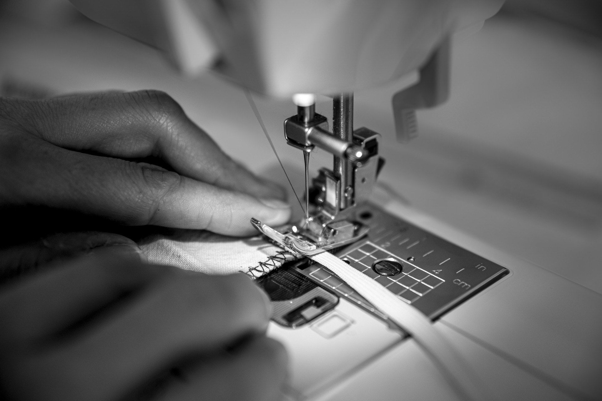

О себе:
Мои главные увлечения — кулинария и шитье.
Готовка для меня — это способ заботы о близких. Люблю экспериментировать с рецептами, готовить дома то, что обычно заказывают в ресторанах, и радовать семью вкусными ужинами.
Шитье — возможность создавать уникальные вещи, которые идеально сидят и отражают мой вкус. Самостоятельно шью одежду для себя и дома: от платьев до декора.
Оба занятия объединяет внимание к деталям, аккуратность и удовольствие от результата.

Связь:
ТЕЛЕФОН
— ожидает обновления —
EMAIL
hello@gulshirin.works (тестовый)
АДРЕС
Москва / Санкт-Петербург
LINKEDIN / СОЦСЕТИ
@gulshirin.sewing
ЛИЧНАЯ ИНФОРМАЦИЯ
ИМЯ
Гулширин Широва
КОМПАНИЯ
———
ВРЕМЯ СВЯЗИ
———
ДОЛЖНОСТЬ
———